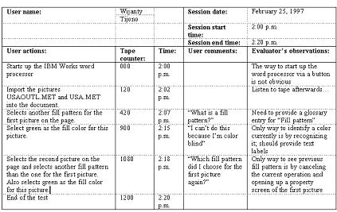

1. Introduction
Goals of usability testing include establishing a baseline of operator performance, establishing
and validating operator performance measures, and identifying potential design concerns and areas of concern to be
addressed in order to improve the efficiency, productivity, and end-user satisfaction.
2. Purpose
This test plan outlines the steps, goals, test measures, and criteria for conducting usability tests of representative
tasks.
3. Test Objectives
-
To identify design inconsistencies and potential usability problem areas within the user interface. Potential
sources of error will include navigational errors (e.g., failure to locate functions, excessive keystrokes to
complete a function, failure to follow recommended screen flow); presentation errors (e.g., failure to locate and
properly act upon desired information in screens or dialog windows, selection errors due to labeling ambiguities),
and controls usage problems (e.g., improper toolbar or entry field usage). Recommendations will be provided to aid
in the resolution of problems and concerns.
-
To exercise the application under controlled test conditions with representative users. Data will be used to assess
whether usability requirements regarding an effective, efficient, and well-received user interface have been met.
-
To establish baseline operator performance and user-satisfaction levels of the user interface for future usability
testing.
4. Scope of Testing
Usability assessments and tests will provide information to the project design team to assess the usability of the GUI
design approach and associated controls.
Representative functions to be tested will be selected from the list of available tasks. Objective performance data
and subjective ease-of-use ratings will be collected.
Usability testing will be conducted to systematically evaluate the tasks, processes, and procedures required to
effectively interact with the application. Operator performance data will be collected and will allow the
identification of usability problems and concerns that may prevent usability performance and user acceptance criteria
from being met. Completing scenarios that exercise representative inquiry and data collection functions will test the
application. Usability performance data is generally collected using an Electronic Data Logging System and portable
usability lab. However, paper and pencil data collection is an acceptable alternative. Results will provide feedback to
the design, business processes, and services teams regarding product limitations and deficiencies that affect usability
and/or impact operator performance. Usability problems and concerns will be categorized and prioritized for resolution.
Fixes and subsequent incorporation of fixes are generally integrated into the product on an as can and as needed basis
(i.e., based on development tool limitations, priority, and criticality).
5. Focus
Emphasis will be placed on the following aspects of user interface design during usability testing:
-
Ease of use
-
Functional flow between window components
-
Consistency of terminology, labeling, and window layouts
-
Error identification and recovery
-
User satisfaction ratings
-
Identify training enhancements
6. Methodology
One representative workstation, loaded with the application to be evaluated, will serve as the test workstation for each
participant. Participants will be tested individually, with 6-10 users to be tested over the course of the study.
Background demographics data will be collected, as will subjective evaluations regarding the usability of the
application.
7. Participants
Between 6-10 current users, with no previous exposure to the application to be tested, will serve as the test participants.
The participants will have the skills and background that are representative of a typical user. It is recommended that
participants have no prior experience with the application prior to the study or to being fully trained in its use.
Instead, participants should be provided with a training overview of the general functions and operations included in the
interface and well as navigation, presentation, and controls concepts implemented in the interface. Thus, participants will
have a baseline understanding of the look and feel of the interface prior to testing but will not have practical experience
in its use. The participants will be expected to have previous PC and mouse experience, as no mouse training will be
provided.
The participants’ responsibilities will be to complete a series of scenarios presented to them in as efficient and timely a
manner as possible, and to provide feedback regarding the usability and acceptability of the user interface. The test
observers will observe, but not directly intervene with, the completion of scenarios. The participants will be directed to
provide honest opinions regarding the usability of the application, and to participate in post-study questionnaires and
debriefing.
As a baseline, test participants must:
-
Be familiar with current procedures, with a minimum of 4 months of floor experience recommended.
-
Have some computer experience in working with computer-based GUI applications, ranging from interacting with an
OS/2 or Windows desktop, using computer games requiring a mouse, or using GUI applications such as AmiPro, Quicken,
or TurboTax. Mouse experience is required.
-
Completion of training overview immediately prior to the study.
-
Be outgoing extroverted people, willing to ask questions and to discuss opinions.
Participant backgrounds should be equally distributed across the following groups:
-
Recent hires (4 months experience recommended)
-
Users with moderate experience
-
Experienced users
New, moderate, and experienced users are defined in terms of specific experience and skills. With a small sample of
6-10 participants, data for all participants and user groups should be combined for analysis.
The test participants will have the skills and background typical of the user segments being tested. Participants will
be expected to be familiar with the functions being tested; but they should not have experience using the application
to perform these tasks.
8. Training
An overview of concepts, functions, and procedures will be presented to each test participant immediately prior to
testing. During training, the participants will be provided with an overview of general navigation and controls usage
as well as the general function and operation of the application. While the concepts of the menu bar, toolbar,
navigation area, and working area of the screen will be described, procedural information or descriptions of system
“caveats” will not be described (e.g., “Watch out for the following….”). In addition to the application overview, the
participants will receive a 5-minute overview of usability testing and be exposed to a sample scenario prior to the
onset of the study.
9. Usability Test Cases
Approximately 7-12 test scenarios are generally created for a usability study, derived from task scenarios developed
from use cases. Tasks will encompass both inquiry and update functions. A test familiarization scenario will be created
to familiarize the users with the attributes and flow of the user interface. A representative subset of user-oriented
usability test cases, derived from use cases, will be selected for test. The tasks tested will be identical for all
participants in the study.
A test database, and not live data, will be used for the test, with the database refreshed after each test
participant. A variety of tasks will be presented in each scenario, representative of the type of information requested
by customers.
Due to the range and extent of functionality provided in the application and the short time for which each participant
will be available, tasks to be tested will be the most common and the most complex of available functions. If possible,
an existing test database will be used, eliminating the need to create additional database records. Scenarios,
containing the tasks to be performed, will be provided to the participants for use during the study. An “answer sheet”
version of the scenarios will be created for the data logger and test observers that will list the (window) location of
the information to be accessed by the test participants. This will aid the test observers in anticipating actions and
with error identification. Test scenarios will be reviewed with process and workflow designers and training personnel
to ensure that their content, format, and presentation are representative of what can be expected on the floor.
The scenarios will be designed to test the major tasks within each function. Both inquiry and data collection
functions will be tested.
10. Test Data
If possible, the database for the study will be comprised of an existing test database, eliminating the need to create
a unique database or to use live data for usability testing. The database must be refreshable between test participants
so that all participants can be presented with the same test data for the scenarios. The test coordinator will ensure
that scenario needs are coordinated and contained within the test database.
11. Test Roles
The tasks involved in the setup and execution of the usability evaluation are listed below. Note: one individual may
play multiple roles.
Setup:
-
Obtain physical space, workstations, and furniture (Note: testing may be done remotely with a portable usability
test lab.).
-
Validate that the test database will remain stable over the course of the study.
-
Arrange for support resources (i.e., to solve system problems).
-
Prepare data response sheets or arrange for data recording equipment (portable usability lab and data logging
equipment).
-
Arrange setup of test and observation areas.
Training:
-
Provide training overview prior to usability testing.
Facilitator:
-
Provides overview of study to participants
-
Defines usability and purpose of usability testing to participants
-
Assists in conduct of participant and observer debriefing sessions
Data Logger:
-
Records participants’ actions and comments
- Data will be recorded using paper and pencil or a PC-based data-logging system.
- One data logger will be required per workstation to be tested.
-
Responds to customer requests for assistance
Role Players: (needed if simulating phone calls or customer visits)
-
Verbally present participants with the scenarios to be completed
-
Respond to participant requests for information—but do not provide assistance to the participant
-
Observe actions and behavior but do not take notes
Test Observers: (encouraged but not required)
-
Participate as an observer (e.g., developers, test sponsor(s))
-
Assist the data logger in identifying problems, concerns, coding bugs, and procedural errors
Test Participants:
-
6-10 representative users encompassing the range of experience
-
Exercise application functionality by completing typical task scenarios
-
Identify areas of confusion by actions and comments
-
Provide objective and subjective comments
-
Provide enthusiastic and honest feedback
12. Procedure
Usability testing is generally conducted over the course of several days. Between 6-10 participants, trained at their job
but unfamiliar with the user interface to be tested, will be brought in to participate in the study for 2-4 hours each.
Issues identified during the day will be recorded on a defect log and assigned to an owner.
The breakdown of activity for training followed by each test session will be as follows (Note: pre-test this so a schedule
is based on real estimates and is realistic):
X minutes Training overview
X minutes Break
X minutes Introductions, usability overview, complete background questionnaire
X minutes Completion of warm-up scenario
X minutes Conduct test scenarios
X minutes Break
X minutes Conduct test scenarios
X minutes Complete post-test questionnaire and debriefing
X minutes Evaluate daily results at end of day (Observers and data logger)
Following the arrival of each test participant, an overview of the purpose and procedures of the study will be presented.
An explanation of the types of measurements to be collected will also be provided. The test facilitator will explain the
concept of usability testing. It will be stressed that the participants have been selected as representative of a typical
user in evaluating the application and that their role as reviewers is important. It will be stressed that they are here to
evaluate the interface and are not themselves being tested. No information collected from individual participants will be
reported back to their manager or supervisor. They will be encouraged to provide as much feedback as possible.
An X minute training overview will be presented, (preferably by a member of the Training team), immediately prior to their
participation in the study. Training will introduce the participants to an overview of the purpose, function, and flow of
the application. Each participant will complete a sample scenario that will demonstrate the navigation and flow through the
interface.
The participants will be encouraged to interact with the application as they would in their work environment. The data
logger will record problems, concerns, and comments. Participants will be encouraged to identify problems and to express
their honest opinions.
Criteria for intervention during the study are as follows:
-
Those playing the role of customers (if role-playing is used) will NOT provide task assistance to the test
participants.
-
If a scenario cannot be completed, participants may request help from an observer, who will allow the participant
to explain the problem before providing assistance.
-
As a general rule, participants will be interrupted if they appear to be hopelessly lost or making no progress in
task completion for more than 3 minutes. Intervention on the part of data-collection personnel will be classified
as an error, equal in severity to having the participant call for help or fail to complete a task.
-
It is recommended that the number of observers directly interacting with the test participants be kept to a
minimum. Participants may feel more uncomfortable, perform more poorly, and feel a greater pressure to conform to
perceived expectations as the number of observers increases.
It is recommended that a dry run of the procedures be conducted prior to the start of the study to validate the
procedures and the operation of application.
During the study, each participant will complete from 7-12 test scenarios (TBD). The order of scenario presentation
will be fixed across test participants. Error and time data will be recorded for each scenario.
Scenarios are generally presented verbally to the test participants, with the “customer” sitting next to the
participant. (This may be the facilitator, data logger, or role player, depending on the study).
The scenarios will describe the activities to be completed and the information to be collected but will not specify
where the information is located. For example, the facilitator may direct the participant to locate a part from a
vehicle VIN but will not specify the screen on which this information is located. The test participants will be free to
explore the interface to access information and complete the scenario but will be directed to complete a given task
before beginning the next task.
If there are test observers, it is recommended that their copies of the scenarios contain information regarding the
location of the information to be retrieved or entered and the toolbar or menu bar selection in which the requested
information is located to aid in data collection.
The participants will be given an opportunity to make comments and will be asked specific questions regarding the
application at the conclusion of the study. Particular attention will be paid to task flow and areas of difficulty in
completing various tasks.
As training regarding the layout and flow across screens and functions will be minimal, participants may have some
difficulty in understanding terminology, navigation, and flow during the initial scenarios. Of interest will be whether
the extent and severity of problems encountered remains constant, increases, or decreases over the course of the
study.
The participants will not be restricted as to what actions to take within a screen, menu bar, or the toolbar, with
test participants having the option of navigating freely throughout the application. The decision as to when a scenario
has been completed will be made by the test participants and not by the test observers. However, the observer will be
permitted to remind the participant to perform those activities that were not attempted (e.g., the participant forgot
to perform a particular task.)
13. Data Collection
Participants’ actions will be recorded with paper and pencil or with a PC-based data-logger capable of time stamping
and categorizing user actions. Data to be collected may include task completion times, terminology confusions,
navigation problems, and requests for help procedural errors and design errors. Participants’ actions may be recorded
on videotape to provide a video record of the study.
Data logged during a participant session may include:
-
Completion times
-
Completion success rates
-
Type and extent of assistance provided
-
Code bugs
-
Recoverable errors (e.g., detected and corrected, procedural)
-
Unrecoverable (critical) errors (e.g., data improperly saved or wrong part reported to customer)
-
Navigation errors
-
Ease-of-use satisfaction ratings
The following table shows a sample data collection log for a test participant.

14. Test Location and Duration
Testing will be conducted iteratively over several days during various stages of development. If testing is to be
videotaped using a portable usability lab, the availability of two rooms for the study is recommended. One room would
be set up with a workstation and with video and audio monitoring equipment. Observers and data collection personnel
would use the second room, with a PC-based electronic notebook provided to log data. The portable usability lab would
be used to collect a video and audio record of the study. If data is to be collected using manual response sheets, a
workstation will be set up in a room of sufficient size for the participant and observer (e.g., in a cubicle or a
conference room). If testing is to be conducted in a single room, it is recommended that the number of observers be
kept to a minimum.
15. Measures
The following data may be collected to measure and establish a baseline of user satisfaction and operator performance
data of the application. These metrics will allow comparison of enhancements to the product, as well as identification
of usability design problems, code bugs, design limitations that impact usability, and problems in terminology,
controls usage, or navigation.
16. Usability Metrics
Usability metrics refers to operator performance measured against specific performance goals necessary to satisfy
usability requirements. Scenario completion success rates, adherence to dialog scripts, error rates, and subjective
evaluations will be used. Time-to-completion of scenarios will also be collected.
The application to be tested will be unfamiliar to the test participants prior to the conduct of this study. As a new
interface, users will not reach asymptotic levels of performance during this study (learning levels off, with no
further improvements over trials). Proficiency will be developed with exposure to the system during the first 30-60
days of usage on the floor. A benefit of usability testing during the initial learning curve will allow for the
collection of objective and subjective data regarding the identification of potential operator performance problem
areas, the intuitiveness of the interface, and initial ease of use.
User time and error performance data will provide feedback regarding the ability of the participants to understand,
navigate, and complete the various functions, and to provide information regarding possible training requirements and
user interface design complexities. Data will also provide feedback regarding the intuitiveness of the user interface
(i.e., the ability of trained users of the existing system to understand, navigate, and complete similar functions
using the new application without training). Recoverable and non-recoverable errors, the proportion of tasks completed
successfully, and subjective evaluations of ease of use will be of primary interest.
The following objective and subjective measures will be used to determine user productivity and user satisfaction of
the application during the usability evaluation.
17. Scenario Completion Rates
Each scenario will require, or request, that the user searches for specific pieces of data that would be used in
responding to a customer’s query. As an example, a search for a vehicle part may provide the user with an opportunity
to enter a VIN, key word description, and the selection of a group index. The percentage of requested data per scenario
that was successfully located or acted upon would comprise these criteria.
18. Errors
Two different types of usability errors are generally recorded:
-
Critical (Non-recoverable) Errors: Critical errors are errors that are not detected by the user or are detected by
the user but are not recoverable. These types of errors often result in data integrity problems or unexpected
results. Examples may include reporting incorrect information to the customer, failing to locate data, or failing
to locate the information requested by the customer.
-
Non-critical (recoverable) Errors: Non-critical errors are errors that are detected by the participant or, if not
detected, do not result in processing problems or unexpected results. These errors are generally frustrating to the
user. These errors may be procedural, in which the participant does not complete a scenario in the most optimal
means (e.g., excessive steps and keystrokes). These errors may also include errors of confusion (e.g., initially
selecting the wrong function, attempting to select a disabled button, or attempting to enter information into a
read-only field).
Following the study, errors will be further classified as Design errors, Navigation errors, Training errors, Coding
errors, and other classifications, as warranted, for issue resolution.
19. Subjective Evaluation
Subjective evaluations regarding ease of use will be collected via pre- and post-test questionnaires, and in a
debriefing session to be held at the conclusion of the study. The questionnaires will utilize free-form questions and
rating scales. At the conclusion of the study, a discussion will be held with the users and test observers to review
questionnaire responses and to obtain additional data and clarification regarding the usability of the
application.
20. Scenario Completion Time
The time to complete each scenario will be recorded.
21. Criteria
Usability testing with a test database provides an opportunity to test the usability of the user interface in a
controlled environment outside of a user’s normal job environment. The use of a test database instead of “live” data
provides a more ‘forgiving’ environment, where users are freer to explore options provided by the interface. As such,
it is expected that errors will be identified that were not previously encountered. Errors identified in usability
testing are expected to encompass screen design and terminology problems and concerns as well as those of navigation
and flow. Target criteria examples:
-
Concepts and procedures for performing common tasks (e.g., initiating a parts search) are understood and
successfully performed by 100% of all test participants by the third trial.
-
Participants will be successful in navigating to the desired function from the views or the toolbar by the end of
the study (e.g., will be able to cross-reference a selected part or use the toolbar to identify a part to
cross-reference).
-
Information contained in a notebook can be successfully located by XX% of all test participants after the third
scenario.
-
Controls are appropriately used (e.g., command buttons and forward and backward arrows buttons) by XX% of the test
participants on the third scenario.
-
Terminology is meaningful and understood by XX% of all test participants at the end of the study.
-
Subjective ratings of the ease-of-use of the application equal or exceed a mean rating of “5” on a 7-point Likert
scale, with a rating of “7” corresponding to a rating of extremely easy to use.
The results of this study will lead to recommendations to redesign some windows or controls, or in the need to consider
alternative means to navigate through the application for selected functions. Test results may also result in training and
design recommendations.
Identified usability problems and concerns will be categorized and prioritized for discussion and resolution. Fixes and
subsequent incorporation of fixes will be integrated into the application on an as-needed basis (i.e., based on criticality
and system limitations).
The test data will be detailed enough to track why any usability criterion was not met (e.g., confusing screen formats,
inconsistent button labeling, design limitation, etc.).
22. Test Dependencies and Responsibilities
This table shows an example of the various activities and responsible parties for executing the usability test:
Task
|
Responsibility
|
Design, execution, and analysis of the study
|
User Interface Design Team
|
Creation of a test database
|
User Interface Design Team
|
Identification of the test participants to be used in the study, including backgrounds and experience
levels
|
Lead Business Analyst
|
Develop/validate test scenarios
|
User Interface Design Team and Use Case Modelers
|
Develop user interface prototype
|
User Interface Design and Development Team
|
Representative product hardware and software
|
Tech. Support
|
Physical space and furniture for testing
|
User Interface Design Team Usability Laboratory
|
Establish usability metrics (performance measures)
|
User Interface Design Team
|
Develop data collection techniques/response sheets for observation and data collection
|
User Interface Design Team
|
Develop demographics questionnaires, ease-of-use questionnaires
|
User Interface Design Team
|
Develop or obtain reviewed and approved training materials
|
Training Team
|
Conduct a dry-run of the procedures prior to the actual usability test
|
User Interface Design Team
|
Pre-test introductions to the operators on the purpose of usability testing
|
User Interface Design Team
|
Develop background and debriefing questionnaires
|
User Interface Design Team
|
Conduct usability testing
|
User Interface Design Team
|
Analyze test data and prepare appropriate report
|
User Interface Design Team
|
23. Reporting of Results
Usability data will be reviewed with other design and development personnel during a debriefing session held at the end
of each day of testing. Identified problems will be recorded and prioritized for resolution, with a procedure
established for the list to be maintained and tracked. A final test report will be available X days after the
conclusion of testing and will include the identification of high-priority problems, recommended solutions, and a
categorization of errors by scenario type.
|